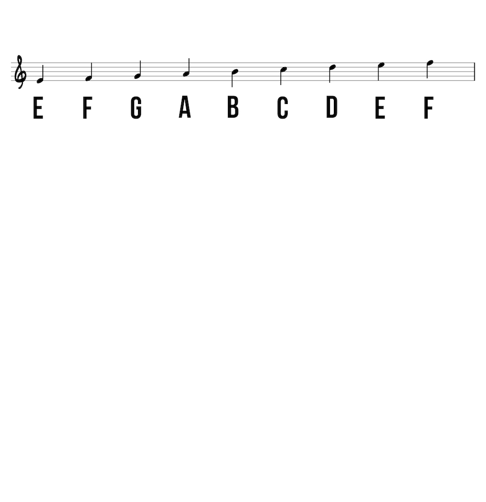
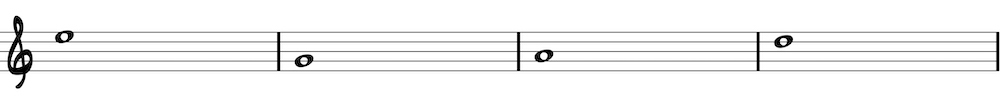
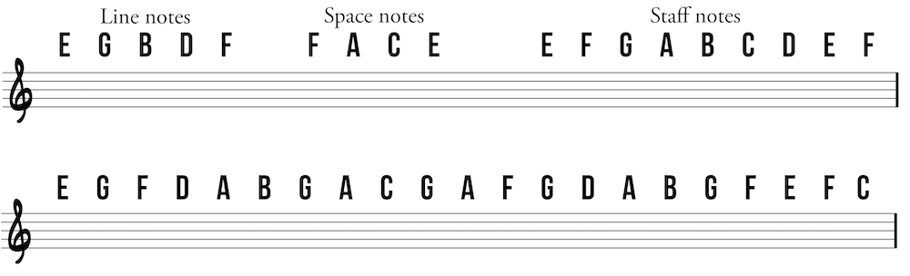

Staff notation is read from left to right and top to bottom just like English. Each line or space represents a note in the musical alphabet A-G. Think of the musical alphabet as a circle that returns to A after G..
Pitch is indicated by placement of notes on the staff (sometimes modified with accidentals sharp or flat), and duration is shown with different note values and additional symbols such as dots and ties. Lower-sounding notes appear lower on the staff starting with E on the bottom line. Notice that the stem direction changes from up on the right side to down on the left side halfway through the staff. Work through the musical alphabet (E-F-G-A-B-C-D-E-F) in the order of LINE-SPACE.
Line notes begin at the bottom of the staff with the note E then skip up one letter for each line up the staff. A common mnemonic device to remember line notes is: Every Guitar Beginner Does Fine (EGBDF).
Begin on the bottom space with F and then skip one letter in the musical alphabet to the next space for A, C, and E. A mnemonic device to remember these notes is the word face (F-A-C-E).
Ledger lines are short horizontal lines used to extend the range of the staff up or down. Simply continue up or down the musical alphabet to determine which pitch is being represented by a note on a ledger line. The typical range of natural notes on the guitar is shown below.
Notice that the stem direction changes from up on the right side to down on the left side halfway through the staff.
Identify the following notes:
Try writing the following notes:
